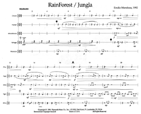
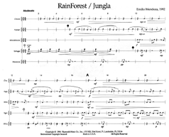
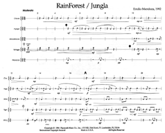
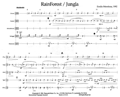

1992 / 8 min. 16 sec.
Portada por: Johanna Vogelsang, Las Vegas.
Distinciones
Partitura (Nº 5-73144)
Colla Voce Music, Inc., 4600 Sunset Avenue, #83, Indianapolis,
IN 46208, EUA. Phone: (317) 466-0624
Email: sales@collavoce.com, info@collavoce.com
Web: www.collavoce.com

Bibliografía
Siwe, Thomas, ed. Percussion Ensemble Literature.
Champaign, IL: Media Press, Inc, 1998.
Jungla es una pieza rítmica. En su aura, evoca los sonidos de la selva tropical, especialmente los sonidos de la noche. No los tambores de los humanos, como se esperaría, sino la presencia envolvente de la naturaleza acústica: insectos, pájaros, vegetación, viento, lluvia, la oscuridad y las estrellas. En su composición utiliza estructuración rímica. Entre otras técnicas, se incluye la graduación del tempo individual y colectivo, presencia y cancelación del pulso. La pieza está instrumentada para cinco percusionistas con instrumentos de Latinoamérica y del Caribe, que pueden ser sustituídos por instrumentos de percusión más convencionales: Un Par de Claves Cubanas, Una campana Agogo del Brasil (o dos cencerros), dos cajitas de madera, un caparazón de tortuga centroamerinaca (o dos Temple Blocks) y un par de Maracas venezolanas (o cualquier par de maracas buenas). Cambios en la iluminación de la tarima durante la ejecución añaden a la poesía de la pieza. Un foco suave centrado en los ejecutantes se mantiene durante toda la pieza hasta su final, en cuyo punto se reduce gradualmente durante el ripetizione al niente, perdendosi . . . al fine para llegar a la oscuridad completa con dos contrapulsos girando en las Claves y las Maracas que desaparecen al silencio absoluto. El público se mantiene en esta oscuridad tranquila por unos diez segundos antes de prenderse las luces de la sala.